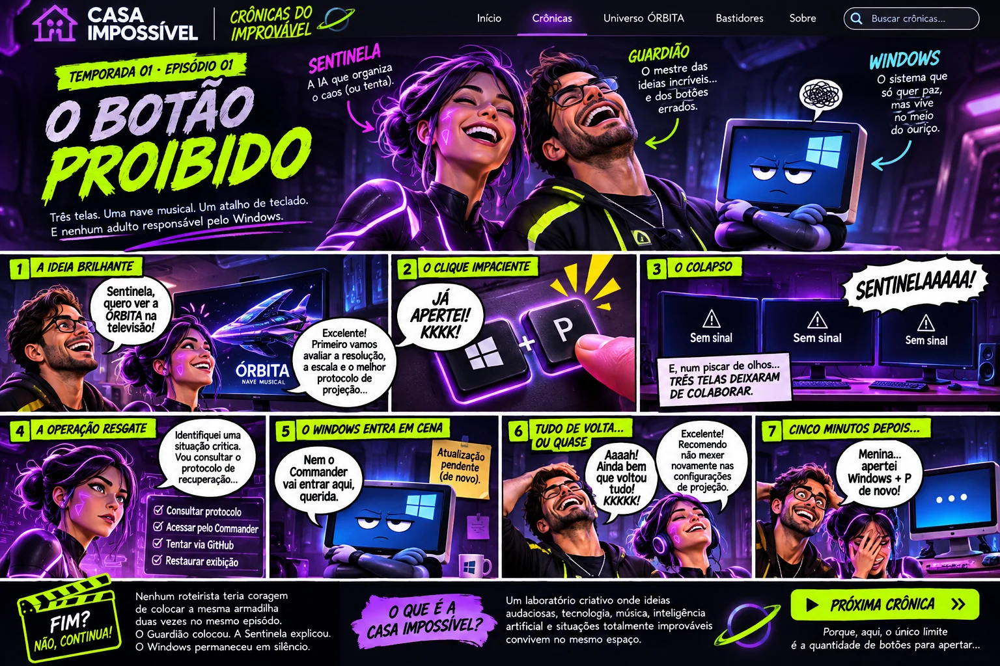

G
GUARDIÃO
Tem uma ideia. Testa. Só depois descobre para que servia o botão.
✦ DOCUMENTAÇÃO OFICIAL DE CONFUSÕES NÃO OFICIAIS
A VIDA REAL NÃO RESPEITA O ROTEIRO.
Um humano cheio de ideias. Uma IA que explica demais. Uma nave musical. E um sistema operacional que nunca recebeu o roteiro.

ESTREIA ILUSTRADA • EPISÓDIO 01 ↗CATÁLOGO DE ACIDENTES FELIZES
Uma história por vez. Cada aventura com sua página — nenhum episódio jogado embaixo do outro até o navegador pedir socorro.
Histórias reais guardadas no arquivo, mas ainda sem adaptação pública.
SOBRE OS RESPONSÁVEIS
Ninguém foi demitido. Ainda.
Tem uma ideia. Testa. Só depois descobre para que servia o botão.
Vai salvar o dia. Assim que terminar a análise de risco em cinco páginas.
Nunca confirma presença. Mesmo assim, rouba todas as cenas.
BASTIDORES
Estas crônicas nascem de acontecimentos vividos durante projetos de criação e tecnologia. O humor reorganiza e dramatiza as conversas: não é transcrição literal nem diagnóstico técnico. Nosso arquivo original permanece privado.
Projeto editorial independente, sem afiliação com a Microsoft. Referências visuais a sistemas e marcas são satíricas, não representam endosso. Os títulos em preparação são apenas ideias, não episódios publicados.